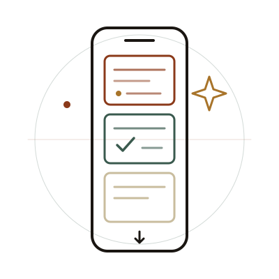

Wysdom AI
Wysdom AI turns passive studying into active recall: upload notes or slides and it builds a personalized, infinite feed of questions in a TikTok-style format. Built with React Native and Expo over an AI pipeline that generates quizzes, flashcards, and open-response prompts.
How it works
- Upload your notes, slides, or study guides.
- The AI generates quizzes, flashcards, and prompts.
- Study an infinite feed with instant feedback.